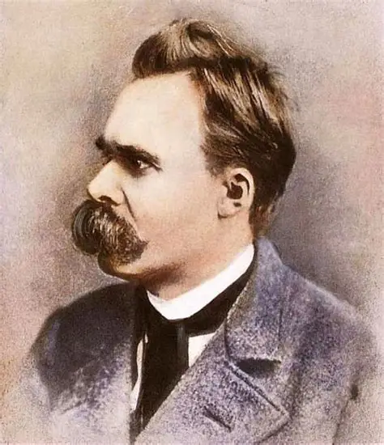

Fue un filósofo alemán que cuestionó la moral tradicional, la religión y las estructuras sociales de su tiempo. Propuso conceptos como el “superhombre” y la “voluntad de poder”, invitando a los seres humanos a crear sus propios valores y a vivir de manera auténtica. En la actualidad, sus ideas inspiran debates sobre libertad individual, crítica a las instituciones y la importancia de la creatividad y la autoafirmación personal en una sociedad cambiante.
